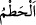

mânâda kullanılır.
“Bitirdiği bitki çiftçilerin hoşuna gider.” âyetteki küffâr kelimesi çiftçiler
anlamındadır.
Ezherî demiştir ki: Araplar çiftçiler için kâfir derler, çünkü saçtığı tohumu toprakla
örter. Küfür sözlükte örtmek demektir. Bu sebeple kâfire hakkı bâtıl ile örttüğü için
kâfir denmiştir. İnsanları örttüğü için kabre de örtmek anlamında kefr denir. Hadiste de
geçer: “Küfür ehli kabir ehlidir.”[267] Geceye de nesneleri ve cisimleri örttüğü için
kâfir denmiştir.
“Bitki” âyette geçen nebât kelimesi, yağmur sebebiyle meydana gelen bitki demektir.
Dolayısıyla burada kâfirlerden maksad Allah’ı inkâr edenlerdir. Çünkü onlar insanlar
arasında dünya süsüne en çok düşkün olanlardır. Mü’min ise hayret veren güzellikte bir
şey gördüğünde onu o güzellikte sunan ve kudretiyle yaratanına intikal eder ve ondan
hoşlanır, zevk alır. Kâfir ise güzel gördüğü şeyden başka bir şey düşünemez, ona dalıp
boğulur gider. Zayıfların kalplerini korumak için bazı yerlerde zînetlerin gösterilmesi
yasaklanmıştır. Gelinlerin zînetleri ve benzeri gibi.
“Sonra kurur da...” Yâni yeşerip güzelleşirken gökten veya yerden gelen bir felâket
sebebiyle kuruyup gider. Araplar, bitki kuruduğunda,
. Baklası kuruyan ya da sararan tarlaya denir. kuruttu
mânâsına da gelir. Bitkinin kurumasına sebep olan şeyler için kullanılır.
“…Sen onun sapsarı olduğunu görürsün.” Baktığında güzel ve zarif gördüğün o şey
sararmıştır. Sararmış buyruldu da, sararır buyrulmadı. Çünkü sararmış olması
kurumasının yakın olduğunu bildirmek içindir. Önce sararır, sonra kurumuş olduğu
görülür. İfâde de bu görülüşüne göre tertib edilmiştir.
“Sonra da çör çöp olur.” Sarardıktan sonra, kırılmış, ezilip dövülmüş ve paramparça
olmuş. Kàmûs’ta , kırmak demektir. Veya kuru olan bir şeyde kullanılmağa mahsûs
bir kelimedir.
Âyet-i kerîme dünya işlerini küçümsemekte ve değersizliğini bildirmektedir. Yâni
dünya işleri ile istikbalde kurtuluşa ulaşılmayan, aslı olmayan hatalı, bozuk işler
olduğunu misâl vererek açıklamaktadır.
Hz. Ali (k.v) şöyle demiştir: İnsanlar uykudadır, öldükleri zaman uyanırlar. Dünya
faydası az, elden çıkması çabuk olan şeydir. Akıllı kimseler, onunla huzur bulmak,
yetinmek şöyle dursun, ona yönelmezler bile.
Bu âyet-i kerîmede dünyanın elden tez çıkması ve faydasının azlığı, zikredilen bitkinin
durumu örnek verilerek gösterilmiştir.
Dünya süsü, aslında Allah’ın zînetidir. Tabiatı gereği sevimli olduğu halde insanın
niyetine göre farklılık arz eder. Her ne kadar dinen haram olmasa da, insan o süse
tabîatıyla yönelirse o dünya süsü olur ve bundan dolayı kınanır. Ama Allah’ın bir
emrini yerine getirmek için dünyaya meyl ederse, bu defa o süs Allah’ın zîneti olur ve
kul bununla övülür. Çünkü Allah’ın emri ve ona bağlı her şey ciddi ve önemlidir. Dünya